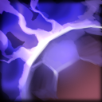

- Mana Break

Сжигает ману врага с каждым ударом. Mana Break наносит противнику урон в размере 50% от сожженной маны.
- Blink
_icon.png)
Телепортация на короткую дистанцию, позволяющая Anti-Mage врываться в схватку и быстро возвращаться назад.
- Counterspell

Увеличивает сопротивление магическому урону. Можно применить, чтобы создать вокруг себя противомагический щит, который полностью отражает все направленные заклинания обратно во врага.
- Mana Void

За каждую отсутствующую у цели единицу маны ей и окружающим противникам наносится урон. Основная цель кратковременно оглушается.